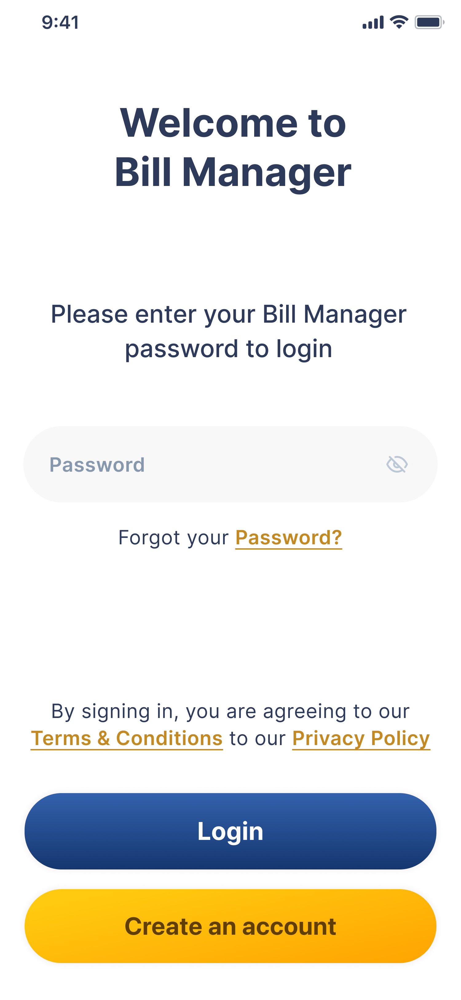
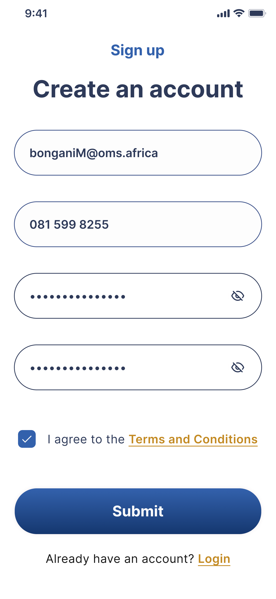
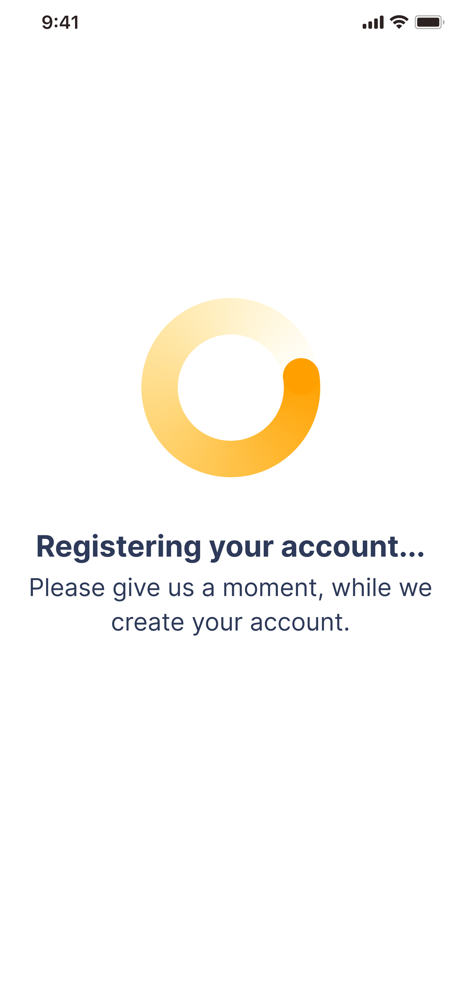
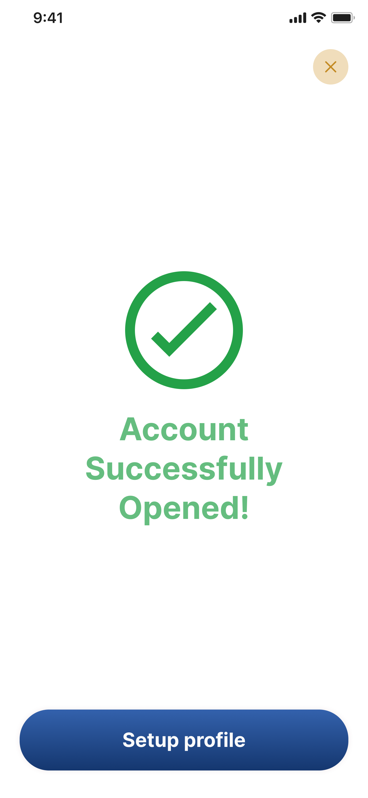
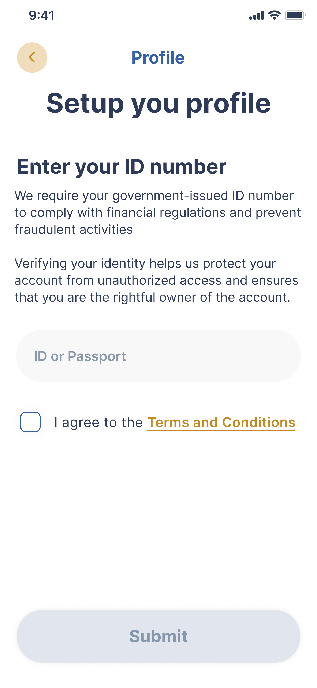
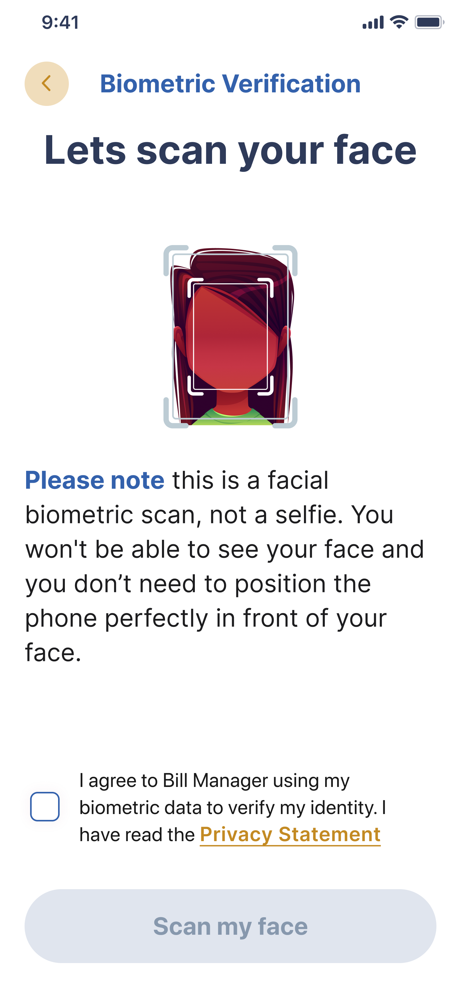
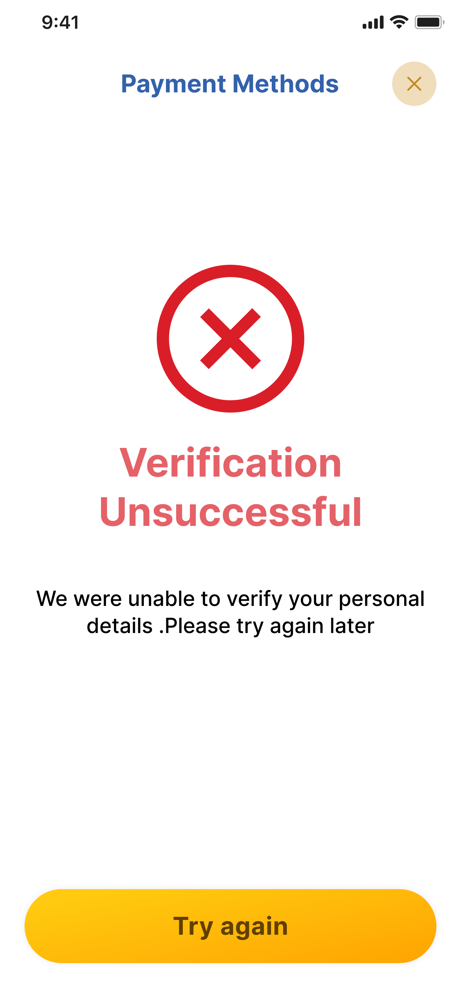
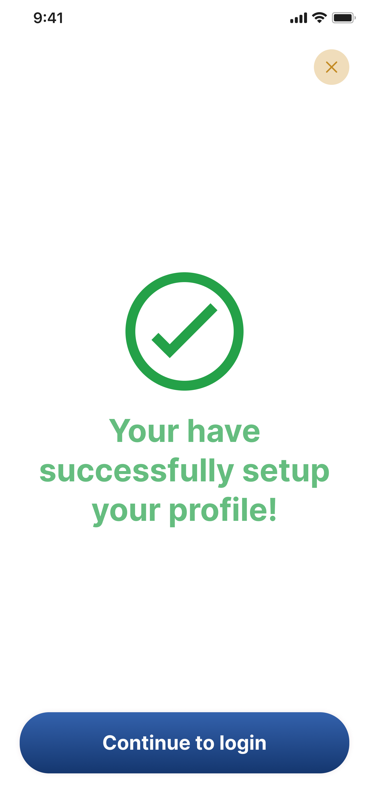
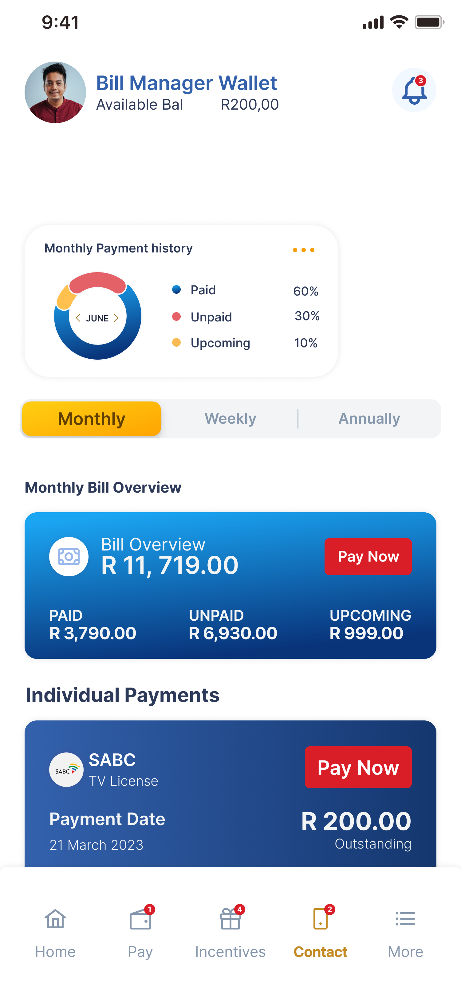
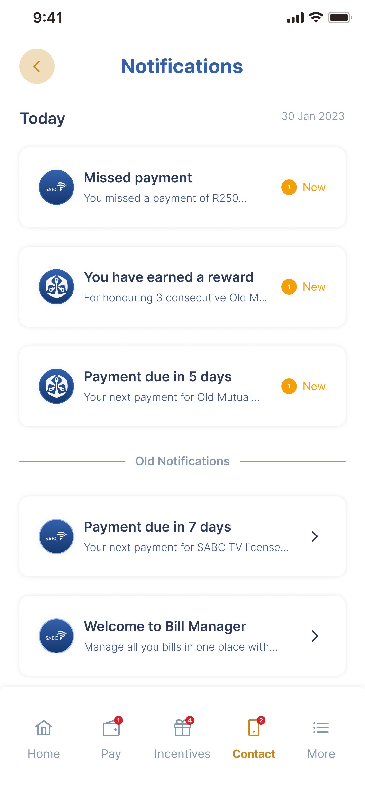

Bill Manager
A complete overhaul of a mobile banking interface focusing on accessibility and user retention.
01 — Problem Statement
Old Mutual wanted to explore a digital solution that helps customers manage their monthly bills, stay on top of payments, and receive proactive notifications for upcoming or overdue bills.
Their challenge:
- Customers often lose track of multiple billers
- Manual reminders cause missed payments
- They wanted a simple, centralised and intuitive system that gives users clarity, control and confidence
The Goal
Design an app that helps users organise, track and manage all their bills in one place, powered by smart notifications and automation.
02 — My responsibility
This was a greenfield initiative. I was the only UI/UX designer, responsible for:
- Brand identity (logo, colour palette, typography)
- UI component library & design system
- UX research
- User flows
- Wireframes, hi-fi screens, and interaction prototypes
The project was placed on hold due to financial constraints, but the full design process and concept were completed.
03 — Customer Value Proposition (CVP)
A smart, unified bill management experience that gives users full visibility over their bills, empowers them to stay ahead of payments, and supports their financial wellbeing.
Clarity
A single dashboard for all bills.
Control
Payment tracking + reminders.
Convenience
Smart notifications and automated syncing.
Confidence
Avoid late fees and maintain healthy financial habits.
04 — Research & Insights
I conducted light discovery research focusing on behavioural patterns around bill payments.
Key Insights
- Users struggle with tracking multiple bills: They rely on screenshots, SMSs, and emails very fragmented.
- Missed payments are emotional triggers: Stress, frustration, and fear of penalties.
- Users love automation when they trust the system: They prefer scheduled reminders, not excessive alerts.
- They want quick actions, not complicated journeys “I want to see everything at a glance and know what needs my attention.
05 — Competitor Review
(Not heavy, but enough to position the experience)
I analysed apps like:
FNB’s money management flow
Nedbank’s My Financial Life
22Seven’s budgeting reminders
Gap identified
Most tools offer budgeting, not bill-focused management. Users lacked a truly bill-first ecosystem. This created space for a specialised solution.
06 — Personas
Primary Persona: The Everyday Payer
- Has 5–12 monthly bills
- Struggles with remembering dates
- Wants a simple overview with smart reminders
Secondary Persona: The Organised Professional
- Wants automation and reliability
- Needs performance trends and month-to-month summaries
07 — UX Approach
- Adding a bill → Viewing dashboard → Getting notified → Marking as paid
- Included edge cases (overdue, missed payment, partial payment)
- Log bills early
- Maintain consistent monthly payment habits
- Engage with notifications instead of ignoring them
Journey Mapping
Mapped the journey from
Target Behaviour
Encourage users to:
08 — Design System & Branding
I created a full micro-design system for the app.
Brand Intent
A visual identity built around:
- Trust (Old Mutual’s brand heritage)
- Modern simplicity
- Financial calmness
Components Designed
- Buttons
- Colour tokens
- Iconography system
- Notification UI components
- Billing cards
- Dashboard widgets
Components Designed
- Colours: Deep Blue, Gold Highlights
- Style: Modern, calming, clean
- Typography: Sans serif for readability
09 — Final UI Screens










Interactive Prototype
11 — Impact & What This Project Achieved
Even though the project didn't fully launch, the design process delivered strong value:
- A full conceptual solution for cost visibility and payment consistency
- A structured design system Old Mutual can reuse for future fintech tools
- Clear user journeys to reduce missed bill payments
- A modernised app experience aligned with the customer value proposition
- A foundation for future product expansion (e.g., automation, debit-order intelligence)
- Reduction in customer missed payments
- Improved customer trust & retention
- Better financial behaviour for users